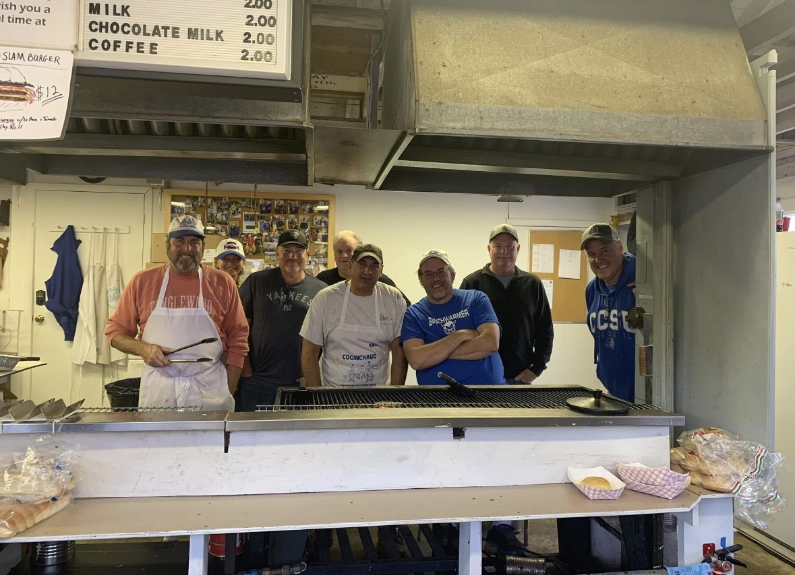

01
Facilities
Projects such as field house upgrades, storage, and grounds improvements that serve athletes for years.
Volunteer-run · RSD13
The Coginchaug Benchwarmers are the volunteer booster club behind Coginchaug High School athletics — raising millions of dollars over the decades to keep our kids in the game.
Our story
Founded in 1966, the Coginchaug Benchwarmers have spent six decades doing one thing: making sure money is never the reason a RSD13 student sits out. We're parents, alumni, and neighbors who flip burgers, run booths, and organize events — all so our athletes have what they need to compete.
What began as a small group of supporters has become a year-round fundraising engine, best known for a food booth at the Durham Fair — the largest agricultural fair in the Northeast — that has been a Benchwarmers tradition for 60 years.


The Durham Fair booth
Every September, our volunteers take over a food booth at the Durham Fair — the largest agricultural fair in the Northeast. For 60 years, the booth has been our biggest fundraiser of the year and a reunion for generations of Coginchaug families.
Watch the FOX61 feature on our booth →Where it goes
Over the decades, Benchwarmers fundraising has added up to $3.5 million for RSD13 athletics and support items — including storage sheds, grounds improvements, scoreboards, and scholarships. Here's what that money buys.
Projects such as field house upgrades, storage, and grounds improvements that serve athletes for years.
Balls, bats, goals, and other gear that keeps practices and games running.
Scoreboard improvements that make games easier to follow for athletes, coaches, and fans.
Annual awards that recognize graduating Coginchaug student-athletes for their achievements, character, and contributions.
Beyond the booth
The Durham Fair booth is our largest tradition, but the Benchwarmers support RSD13 student-athletes throughout the year with community fundraisers that bring families, alumni, and fans together.
Frequently asked questions
Join the Benchwarmers family and make a difference for student-athletes.